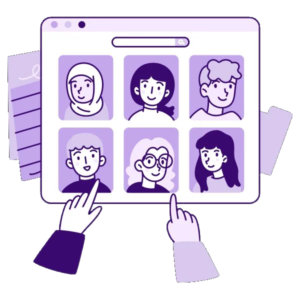

A free, 2-week sprint of structured 1:1 reviews run by expert mentors with 4+ years in UX and product design. Get the feedback hiring managers think but rarely say — then fix it while it still counts.
The same four lenses a hiring panel uses — applied to 1–2 of your case studies.
Does your case study read as a decision narrative, or a screenshot gallery? Structure, flow, and what to cut.
Can a reader trace why you made each call — and would you survive the "why this, not that?" question live?
What changed because of your work? Framing outcomes credibly, even without perfect metrics.
Whether the craft of the portfolio itself — layout, emphasis, scannability — works for a 90-second skim.
Submit your portfolio (3+ case studies). We match you with a mentor whose experience aligns with your target roles.
A real 1:1 review of 1–2 case studies — storytelling, decisions, business impact, hierarchy. Specific, written feedback.
Apply the feedback. This is the whole point — the sprint is built around your revision, not the critique.
A final session to pressure-test the improvements and rehearse how you'll present the work in interviews.

Run by volunteer mentors with 4+ years in UX and product design. Seats per sprint are limited — apply early.